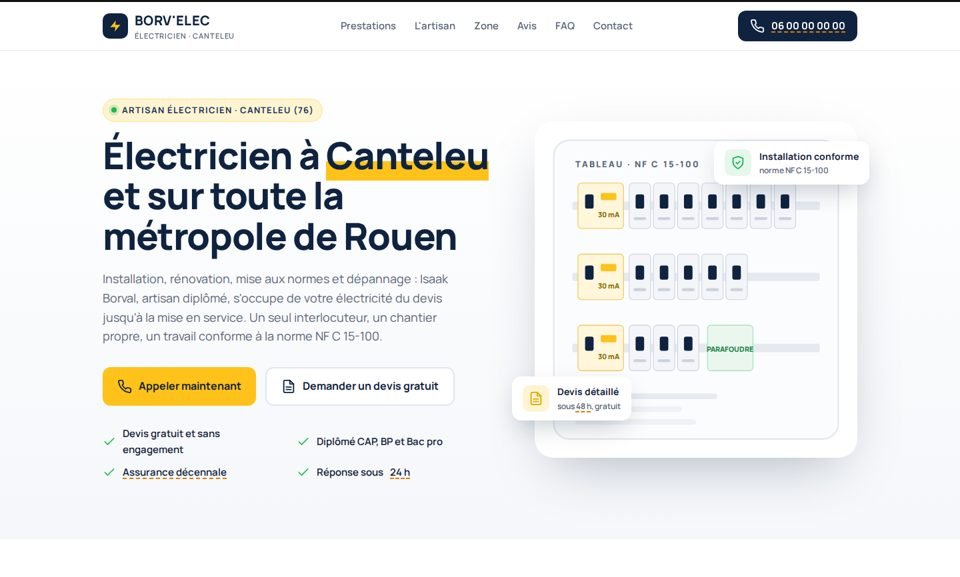
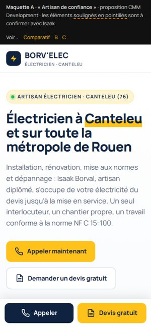

PROPOSITION A
Artisan de confiance
Clair, net et rassurant. Les codes que les clients connaissent déjà : bleu marine, jaune électrique, prestations en cartes.
- Idéal si
- Tu veux un site qui inspire confiance à tout le monde, des jeunes propriétaires aux retraités.
- Point fort
- Le plus efficace pour faire appeler : téléphone visible partout, devis gratuit mis en avant.
- À savoir
- C'est le style le plus répandu chez les électriciens : propre, mais moins différenciant.